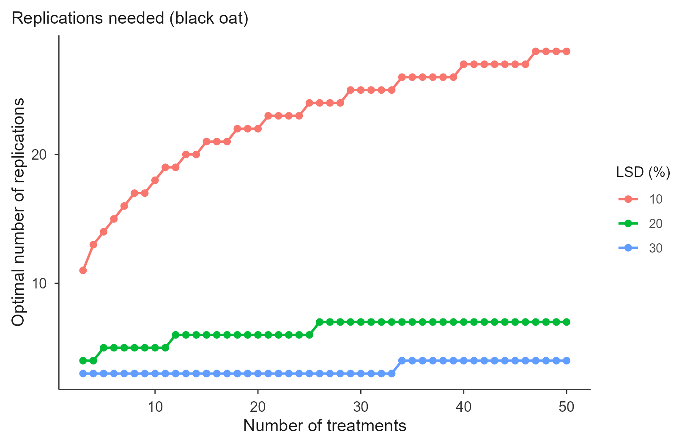
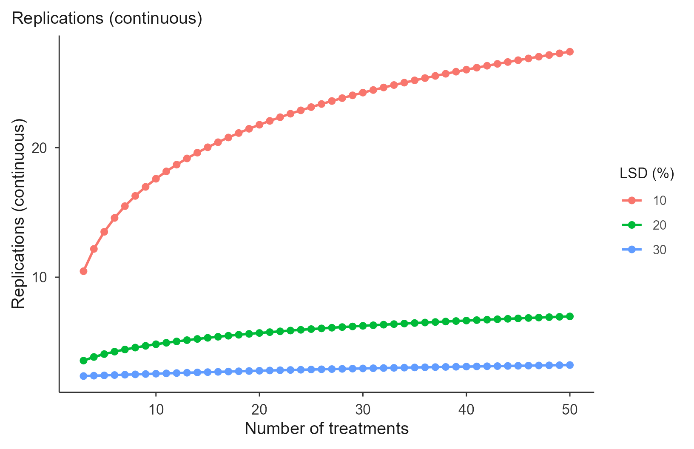

replicates.Rmd
library(trialSize)Choosing the plot size settles one half of the design; the other half is how many times to replicate it. The two are linked: the plot size determines the experimental precision, expressed as , and that precision determines how many replications are needed to detect a given difference between treatment means.
The starting point is the least significant difference of the Tukey test, expressed as a percentage of the experiment mean:
where is the Tukey critical value for treatments and error degrees of freedom, is the error mean square, is the number of replications and the mean. Substituting the experimental coefficient of variation, , and solving for :
with error degrees of freedom
Here is : the CV expected once the experiment uses the optimal plot size.
The expression is circular. The critical value depends on the error degrees of freedom, which depend on , which is what we are solving for. So is obtained iteratively: guess , compute and , get a new , repeat until it stops moving.
calc_replicates() runs that fixed point and reports
two readings of the result:
r_continuous: the converged value, e.g. 10.46. This is
what the published tables print, and what to quote when comparing with
an article.r_optimal: the practical integer,
ceiling(r_continuous), floored at 2. You cannot run 10.46
replications, and no design runs fewer than 2.Smaller means finer resolution, and the cost is steep: because grows with the square of , halving the difference you want to detect roughly quadruples the replications needed.
Method: Cargnelutti Filho, A., Alves, B. M., Toebe, M., Burin, C., Santos, G. O., Facco, G., Neu, I. M. M. & Stefanello, R. B. (2014). Tamanho de parcela e número de repetições em aveia preta. Ciência Rural, 44(10), 1732-1739.
The examples below reproduce Tables 2 (CRD) and 3 (RCBD) of that article, which use black oat with m² and .
reps <- calc_replicates(
treatments = c(3, 10, 50),
cv_percent = 9.25,
lsd_percent = c(10, 20, 30),
design = "CRD"
)
reps
#> Optimal number of replications
#> Design: CRD CV: 9.25% alpha: 0.05
#> Rows: 9 | Non-converged: 0
#>
#> Treatments CV_percent LSD_percent Alpha Design r_continuous r_optimal df_error
#> 3 9.25 10 0.05 CRD 10.46 11 30
#> 10 9.25 10 0.05 CRD 17.60 18 170
#> 50 9.25 10 0.05 CRD 27.41 28 1350
#> 3 9.25 20 0.05 CRD 3.56 4 9
#> 10 9.25 20 0.05 CRD 4.82 5 40
#> 50 9.25 20 0.05 CRD 6.97 7 300
#> q_tukey converged at_floor
#> 3.486 TRUE FALSE
#> 4.534 TRUE FALSE
#> 5.660 TRUE FALSE
#> 3.948 TRUE FALSE
#> 4.735 TRUE FALSE
#> 5.709 TRUE FALSEReading the first row: with 3 treatments and a CV of 9.25%, detecting a difference of 10% of the mean needs 10.46 replications in theory, so 11 in practice. The published table gives 10.46 for that cell.
summary(reps)
#> Optimal replications (integer) by LSD (%):
#> LSD_percent r_optimal.min r_optimal.max
#> 1 10 11 28
#> 2 20 4 7
#> 3 30 3 4The full grid is in $data, one row per treatments × LSD
combination:
head(reps$data[, c("Treatments", "LSD_percent", "r_continuous",
"r_optimal", "df_error", "q_tukey")])
#> Treatments LSD_percent r_continuous r_optimal df_error q_tukey
#> 1 3 10 10.461338 11 30 3.486420
#> 2 10 10 17.602589 18 170 4.534275
#> 3 50 10 27.412939 28 1350 5.659947
#> 4 3 20 3.556788 4 9 3.948492
#> 5 10 20 4.820311 5 40 4.734513
#> 6 50 20 6.971561 7 300 5.708613Randomized complete blocks need slightly more replications than a completely randomized design at the same precision, because blocking costs error degrees of freedom. The gap narrows as the number of treatments grows:
rbind(
CRD = calc_replicates(c(3, 50), 9.25, 10, design = "CRD")$data$r_continuous,
RCBD = calc_replicates(c(3, 50), 9.25, 10, design = "RCBD")$data$r_continuous
)
#> [,1] [,2]
#> CRD 10.46134 27.41294
#> RCBD 10.96024 27.41574With 3 treatments the difference is 10.46 against 10.95; with 50 it has practically vanished. Both match the published tables.
A stricter significance level raises the critical value and therefore the replications:
rbind(
`alpha = 0.05` = calc_replicates(10, 9.25, 20, alpha = 0.05)$data$r_continuous,
`alpha = 0.01` = calc_replicates(10, 9.25, 20, alpha = 0.01)$data$r_continuous
)
#> [,1]
#> alpha = 0.05 4.820311
#> alpha = 0.01 6.420760In practice comes from one of the plot-size methods rather than being typed in. Fitting the chickpea trial and feeding the result straight through:
X <- c(1, 2, 2, 3, 3, 4, 6, 6, 6, 6, 9, 12, 12, 18, 18)
CV1 <- c(30.40, 19.51, 23.72, 12.89, 21.32, 16.69, 6.71, 10.75,
17.58, 14.94, 11.93, 3.18, 8.63, 4.25, 11.41)
lrp <- fit_lrp(X, CV1)
cvxo <- unname(lrp$parameters["Breakpoint_Response"])
cvxo
#> [1] 7.880598
calc_replicates(treatments = c(5, 10, 20), cv_percent = cvxo,
lsd_percent = c(10, 20), design = "RCBD")$data[
, c("Treatments", "LSD_percent", "r_continuous", "r_optimal")]
#> Treatments LSD_percent r_continuous r_optimal
#> 1 5 10 10.212491 11
#> 2 10 10 12.966795 13
#> 3 20 10 15.900785 16
#> 4 5 20 3.411370 4
#> 5 10 20 3.733835 4
#> 6 20 20 4.253899 5So a trial designed with plots of 7.44 m² would carry an expected CV of 7.88%, and detecting differences of 20% of the mean among 10 treatments in blocks would need 4 replications.
Over a range of treatments the trade-off becomes visual: one line per LSD level, showing how the requirement climbs as the number of treatments grows and as the target difference tightens.
reps <- calc_replicates(treatments = 3:50, cv_percent = 9.25,
lsd_percent = c(10, 20, 30), design = "CRD")
plot(reps, title = "Replications needed (black oat)")
The default plots the integer r_optimal, which is why
the lines are stepped. For the smooth theoretical curve, plot the
continuous value:
plot(reps, y_var = "r_continuous", title = "Replications (continuous)")
plot(reps, title = "Replications needed",
save = TRUE, file = "replications.tiff", format = "tiff", dpi = 300)The article’s conclusion illustrates how these numbers are used in practice. With a CV of 9.25%, detecting differences of 10% of the mean would need around 27 replications for 50 treatments, which is not feasible in the field. Turning the question around and fixing , a common choice in the literature, the detectable difference becomes about 26.7% of the mean. That is the honest statement of what the experiment can and cannot resolve.
The function does not pick a precision for you, and it should not: that decision depends on how large a difference matters agronomically and how much field area is available. What it does is make the trade-off explicit before the experiment is installed rather than after.
vignette("lrp"), vignette("qrp") and
vignette("mcm") cover the CV-based plot-size methods that
supply
;
vignette("paranaiba") derives it directly from the raw
trial grid.